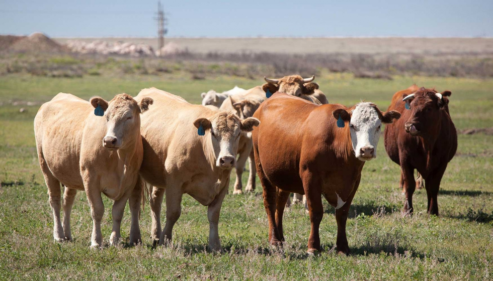

El sector ganadero depende del agua no solo para la hidratación de los animales, sino también para actividades como limpieza, producción de forrajes, manejo de estiércol y mantenimiento de infraestructuras. Una gestión eficiente del agua en la ganadería es crucial para reducir su desperdicio y proteger el medio ambiente.
El agua es un recurso clave en la ganadería, y su uso eficiente puede mejorar la productividad, reducir costos y minimizar el impacto ambiental. Actividades como el uso de bebederos automatizados, la captación de agua de lluvia o la reutilización de aguas residuales pueden implementarse en instituciones agropecuarias como el CBTA 88 para promover prácticas ganaderas más sostenibles y responsables.

⬅ Volver